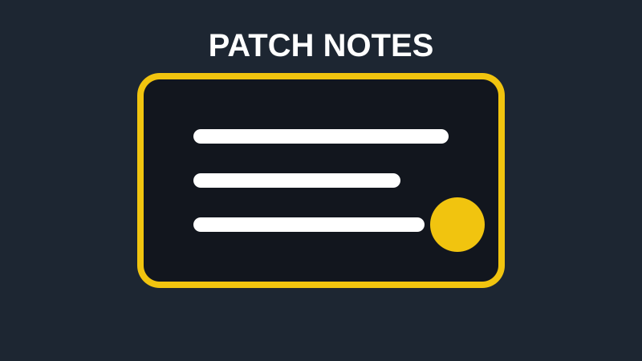

Patch Watch
Major patches can change weapons, characters, maps, movement, matchmaking, or progression. Checking patch notes before playing can save time and help players adjust faster.
Your checkpoint for what to play next.
GAMING NEWS
Game Central organizes gaming news around updates that can actually affect what players do: patches, seasons, events, balance changes, and major announcements.

Major patches can change weapons, characters, maps, movement, matchmaking, or progression. Checking patch notes before playing can save time and help players adjust faster.
Season launches and limited-time events can introduce challenges, cosmetics, new modes, map changes, and story content. These updates are often the best reason to return to a game.
Release dates, expansions, platform changes, and game reveals are worth tracking because they help players decide what to buy, download, or watch next.
EXTERNAL RESOURCE
For broader industry information, visitors can also explore official gaming and platform websites. External links are clearly separated from Game Central content.